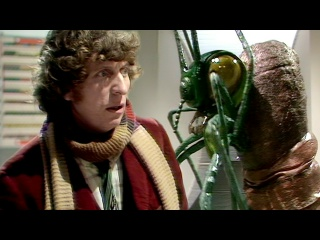
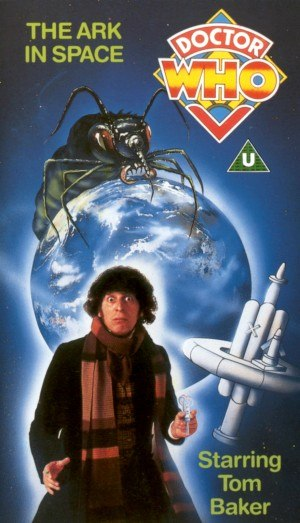
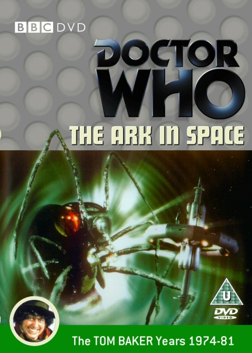
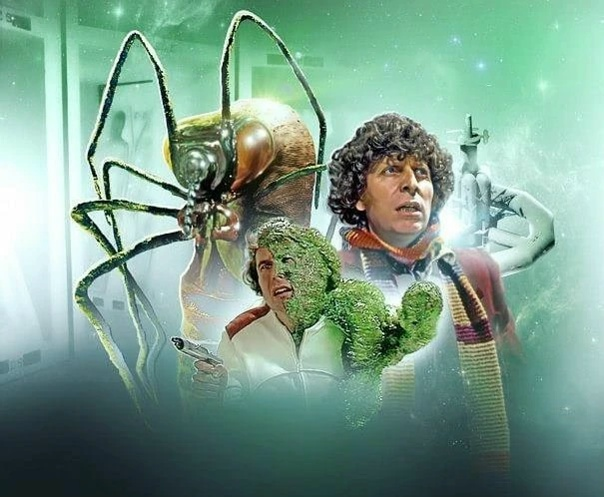
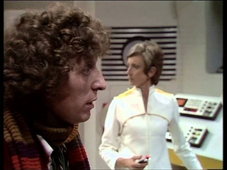

Субтитры: Русские и Английские | |
с обновленными спецэффектами Субтитры: Русские и Английские | |
с обновлением визуальных эффектов (cunningmunki) Субтитры: отсутствуют | |
Субтитры: отсутствуют |  |
The Ark in Space
Дата выхода: 25 января - 15 февраля 1975
Формат: 4 эпизода по 25 мин.
| |
ТАРДИС прибывает на космическую станцию «Нерва» — ковчег, где в криосне тысячелетиями спят последние представители человечества, пережидая космическую катастрофу. Но станция не пуста: кто-то уже проник внутрь, и пробуждённые колонисты начинают гибнуть один за другим. Доктор, Сара Джейн и Гарри оказываются заперты на станции с угрозой, которая использует людей как ресурс — и выбраться не так просто, как кажется. Дебют расы виррн и одна из самых атмосферных и клаустрофобных серий эпохи Четвёртого Доктора.
 VHS - янв.1989 / фев.1994 |  DVD - 8 апреля 2002 |
|---|---|
DVD-SE - 18 февраля 2013 |  Blu-ray - 8 июля 2019 * Версия в нашей группе |

